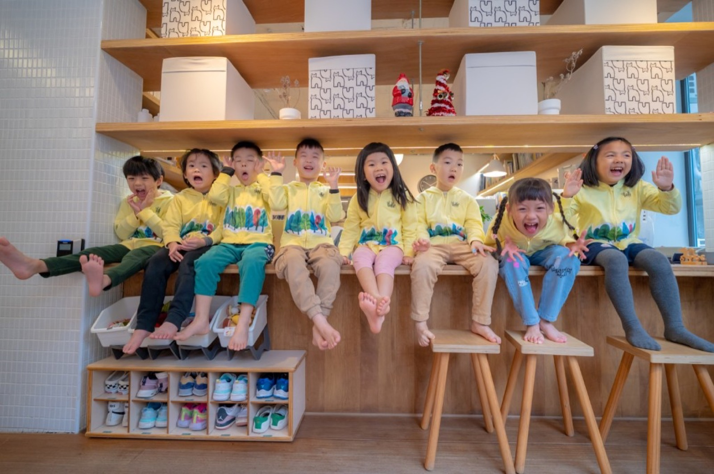
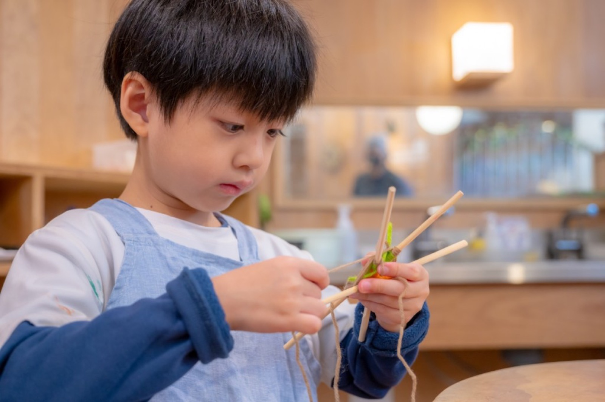
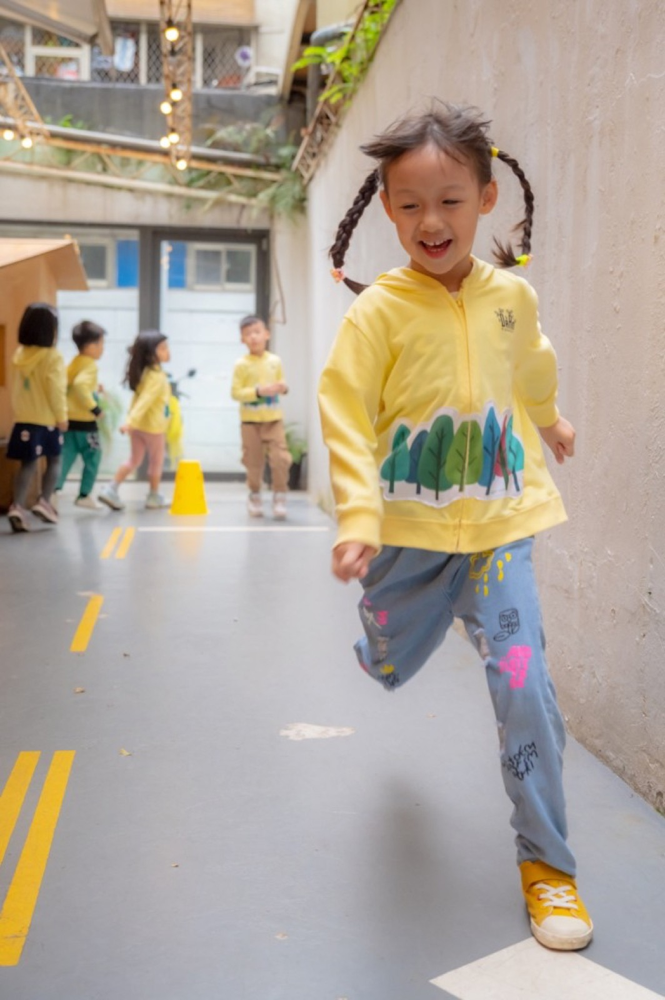
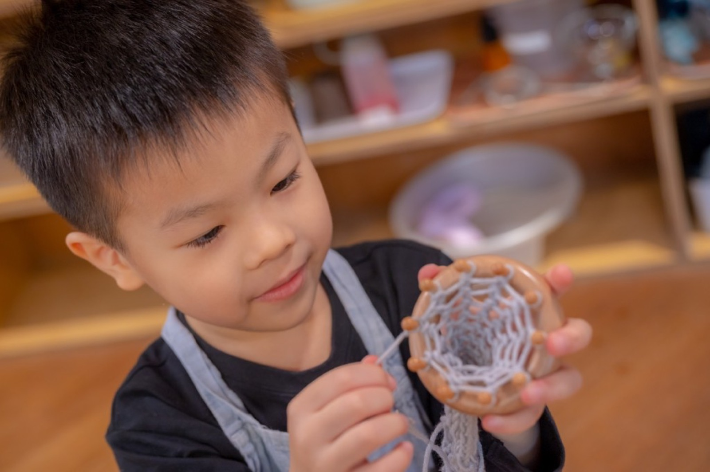
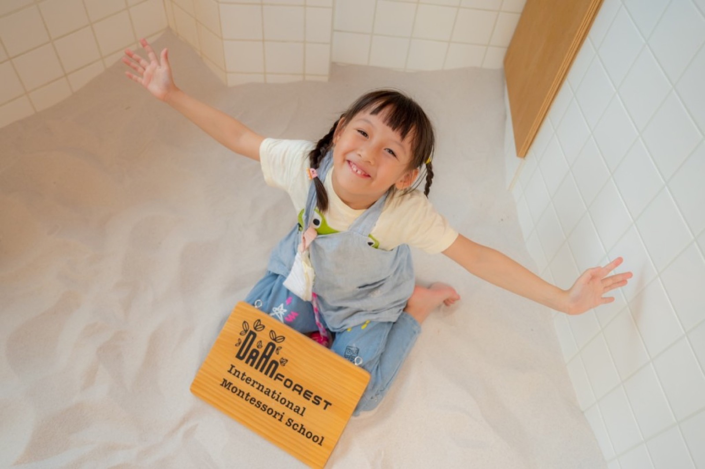
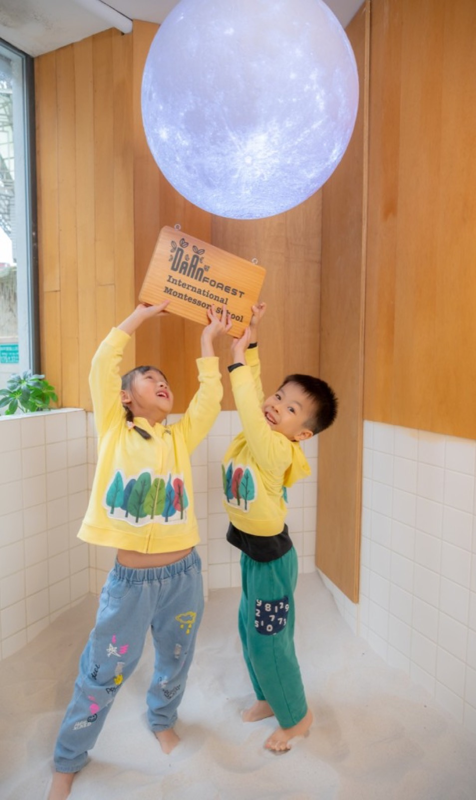
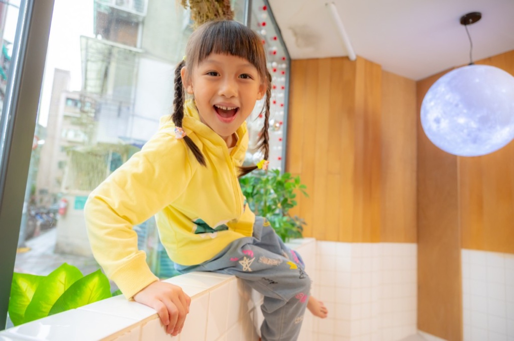
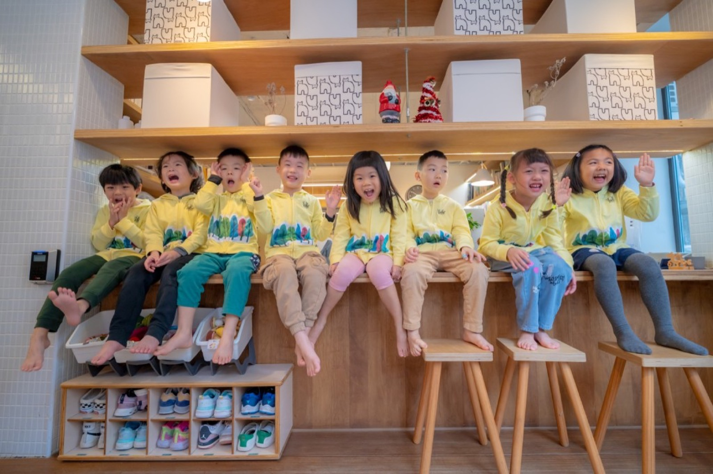
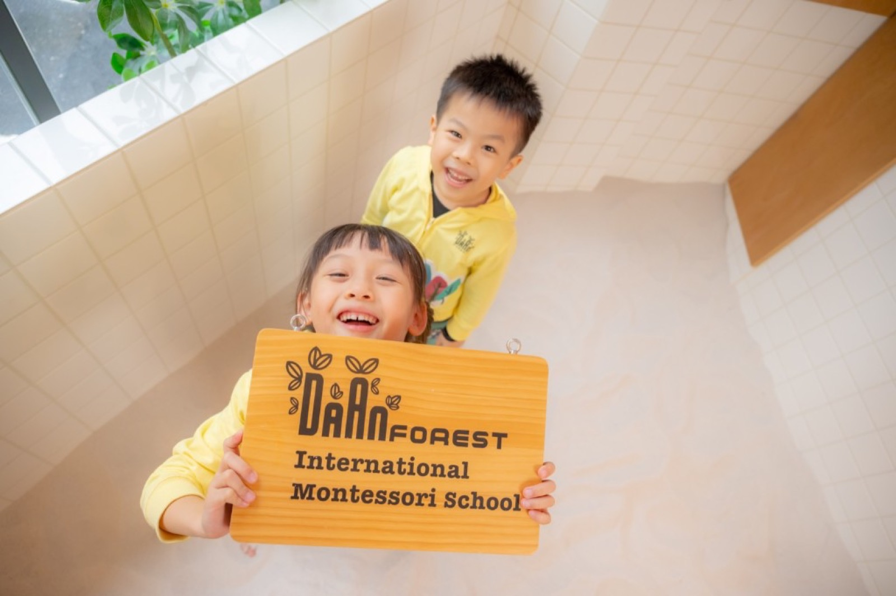
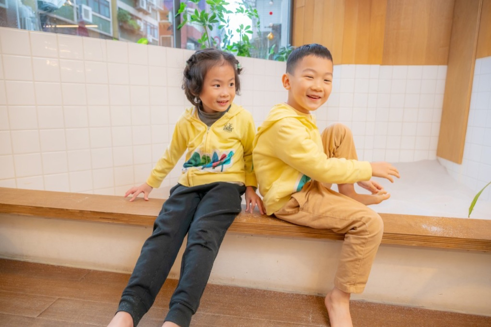

蒙特梭利的活潑與公園外景
與蒙特梭利森林幼兒園合作的畢業照專案，校內捕捉孩子互動、上課與遊戲的自然瞬間，外景至大安森林公園留下活潑的戶外照，並納入親子家庭照。小巴老師以引導代替擺拍，保留約三成「不看鏡頭」的畫面，讓每張照片都自然生動，園所與家長都很滿意。

這次與台北市私立蒙特梭利森林幼兒園的合作，從一開始就讓人很期待：園所重視孩子的自然與活潑，不希望畢業照只有「站好、看鏡頭」的制式畫面，而是希望留下互動、遊戲、閱讀與實作的真實瞬間。我們在校內安排了上課與 DIY 情境的側拍，也捕捉孩子們遊戲與共讀的畫面；室外則帶班到大安森林公園出外景，讓孩子在草地與樹蔭下盡情跑跳，拍出自然生動的團體照與個人照。更特別的是，這次專案還納入了親子家庭照，把親子寫真與畢業照結合在一起，讓家長也能入鏡，留下與孩子一起的溫馨畫面。
在拍攝前，我們與園所溝通了一個很重要的觀念：不必每張都看鏡頭。小巴老師認為，孩子專注在遊戲、與同學互動、或望向遠方的表情，往往比「一二三笑一個」更真實、更有故事感。因此我們約定約三成左右的畫面可以是不看鏡頭的瞬間，結果成品裡的笑容與氛圍都更自然，園所與畢業生家長回饋也非常好。若您的學校也期待這樣的畢業照風格，歡迎與我們聯繫。
關鍵字
#畢業照拍攝 #學士照 #大學畢業照 #畢業典禮攝影 #幼兒園攝影 #運動會攝影 #戶外教學攝影 #校外教學攝影 #親子攝影 #家庭寫真 #兒童寫真 #幼兒園畢業照 #蒙特梭利 #自然風格














